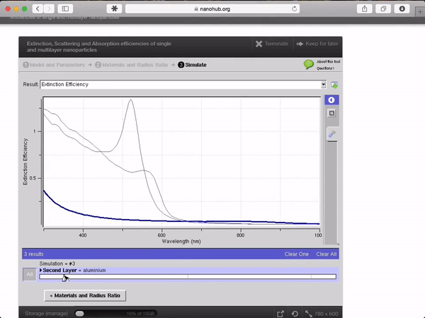

Hub users
Getting started
The first hour on a hub, in order: create an account, confirm it, fill in enough of a profile to be findable, arrange a dashboard, and then find the part of the site you actually came for.
1. Create an account
Go to /register, or select Create an account under the login form.
The form asks for a username, a password, your name, and an email address,
plus whatever profile questions your hub has added. Full instructions,
including what each fieldset means and what the password rules are, are in
Registration.
2. Confirm your email address
Unless the hub has been set to skip it, you are sent a message with an activation link. Follow it and log in. Until you do, the account exists but cannot be used. Some hubs also require an administrator to approve the account, which happens after you confirm.
The message is generated automatically, so check your spam folder if it does not arrive within a few minutes.
3. Fill in your profile
Your profile is at Members > (your name) > Profile, or directly at
/members/myaccount. Each row is one field with an Edit link beside it;
selecting it opens the field in place, with a Privacy menu next to the
value. See Member profile for the field-by-field detail and for
uploading a picture.
Two things are worth doing straight away:
- Decide whether the whole profile is public or private, using the toggle at the top of the Profile tab. Per-field privacy only works while the profile itself is public.
- Fill in your organisation and interests. They are what makes you findable by other members, and on hubs that run Solr search, member profiles are indexed.
4. Arrange your dashboard
The Dashboard tab is your own page of modules — current tool sessions and disk usage, your groups, your projects, recent activity, whatever the hub offers. It starts from a default arrangement and you rearrange it by dragging. Member dashboard covers adding, removing, and configuring modules.
5. Find your way around
What a hub offers beyond that varies. These are the parts most hubs turn on.
Groups
A group is a shared space, private or public. Each one can have its own pages, membership roles, announcements, blog, calendar, collections, forum, wiki, and file area. Joining an existing group is usually the fastest way to see what a hub is actually used for.
Projects
A project is a workspace for a piece of research: files, notes, a to-do list, and a database area. Project file storage can be the hub's own, or connected to Amazon S3, Dropbox, GitHub, or Google Drive through the hub's filesystem plugins. When the work is ready, a project is the starting point for a publication.
Publications
Publications walks a contributor through releasing data, code, or a paper in steps — files, authors, abstract, licence — that can be revisited in any order. A published version can carry a licence and a minted DOI. Where the hub uses curation, a curator reviews the draft and leaves notes before it goes live; see Curation.
Tools
Where a hub runs the tool platform, published tools launch in the browser and execute on the hub's own machines. Running one, sharing a session, and contributing your own are covered in Tools.

Wiki and collections
The wiki holds member-written articles; an article's author can keep a fixed list of authors or leave it open for anyone to edit. Collections are a lighter way to gather images, links, and files into a board that other members can follow and re-collect.
What is not here
The tool execution platform, the Solr search service, and the statistics
collection behind the hub's /usage page are separate software that runs
alongside the CMS. Chapters that depend on them say so, because on a hub where
they are not installed the corresponding pages are empty or absent.
Rewritten and checked against 2.4-main @ 1924c22171 on 2026-09-09.